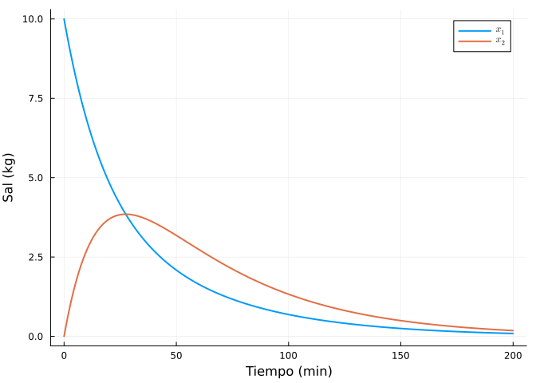
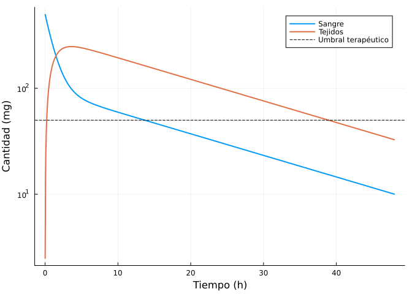
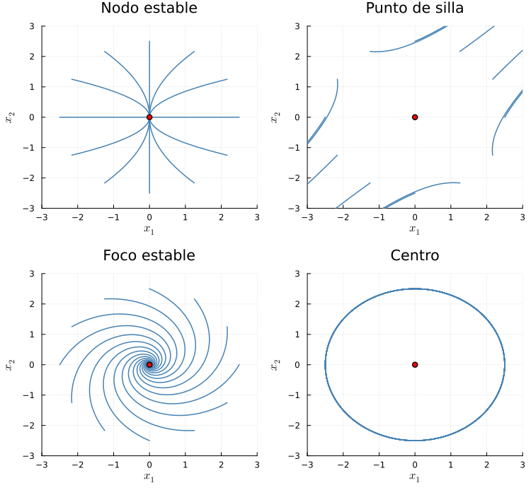
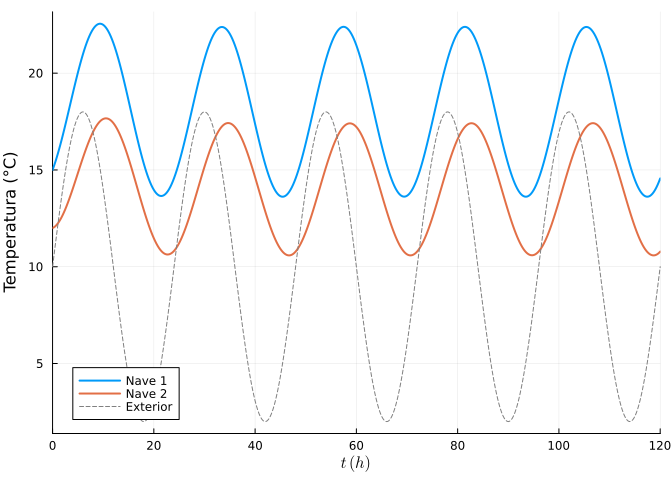
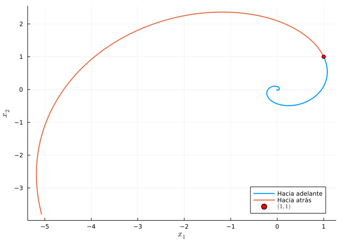

3 Sistemas de ecuaciones diferenciales lineales
Un sistema lineal de primer orden puede escribirse en forma matricial como
\[ \mathbf{x}' = A(t)\,\mathbf{x} + \mathbf{b}(t). \]
Si \(\mathbf{b}=\mathbf{0}\) el sistema es homogéneo y sus soluciones forman un espacio vectorial (principio de superposición). Si \(A\) es constante, la solución del problema de valores iniciales \(\mathbf{x}(0)=\mathbf{x}_0\) existe, es única y viene dada por la matriz exponencial:
\[ \mathbf{x}(t) = e^{At}\,\mathbf{x}_0, \qquad e^{At} = \sum_{k=0}^{\infty} \frac{(At)^k}{k!}. \]
Para el sistema completo, \(\mathbf{x}(t) = e^{At}\mathbf{x}_0 + \int_0^t e^{A(t-s)}\,\mathbf{b}(s)\,ds\) (fórmula de variación de las constantes).
3.1 Ejercicios resueltos
Para la realización de esta práctica se requieren los siguientes paquetes:
using SymPyPythonCall # Cálculo simbólico.
using LinearAlgebra # Autovalores, autovectores y exponencial de matrices.
using Plots # Dibujo de gráficas.
using DifferentialEquations # Resolución numérica.
using LaTeXStrings # Código LaTeX en los gráficos.
NotaVersiones de Julia y de los paquetes utilizados
Status `~/.julia/environments/v1.12/Project.toml` [0c46a032] DifferentialEquations v8.0.2 [b964fa9f] LaTeXStrings v1.4.0 [91a5bcdd] Plots v1.41.6 [bc8888f7] SymPyPythonCall v0.5.1 [37e2e46d] LinearAlgebra v1.12.0
Ejercicio 3.1 Dos tanques de salmuera acoplados (ingeniería química). Dos tanques de 100 L están conectados: del tanque 1 pasan al 2 un caudal de 4 L/min, del 2 al 1 vuelven 1 L/min, al tanque 1 entra agua pura a 3 L/min y del tanque 2 se extraen 3 L/min. Si \(x_1, x_2\) son los kg de sal en cada tanque,
\[ \begin{pmatrix} x_1 \\ x_2 \end{pmatrix}' = \underbrace{\begin{pmatrix} -0.04 & 0.01 \\ 0.04 & -0.04 \end{pmatrix}}_{A} \begin{pmatrix} x_1 \\ x_2 \end{pmatrix}, \qquad x_1(0) = 10,\; x_2(0) = 0. \]
Calcular los autovalores y autovectores de \(A\) y escribir la solución general como combinación lineal de soluciones fundamentales \(e^{\lambda_i t}\mathbf{v}_i\).
NotaAyudaUsar
eigvalsyeigvecsdeLinearAlgebra, o bienA.eigenvects()con una matriz simbólica deSymPy.TipSoluciónusing LinearAlgebra A = [-0.04 0.01; 0.04 -0.04] λ = eigvals(A)2-element Vector{Float64}: -0.06 -0.019999999999999997V = eigvecs(A)2×2 Matrix{Float64}: -0.447214 0.447214 0.894427 0.894427Comprobación simbólica con
A.eigenvects()deSymPy, que además de los autovalores da su multiplicidad y una base de autovectores para cada uno:using SymPyPythonCall As = Sym[-4 1; 4 -4] / 100 # -0.04, 0.01, 0.04, -0.04 As.eigenvects()2-element Vector{Tuple{Sym{PythonCall.Py}, Sym{PythonCall.Py}, Vector{Matrix{Sym{PythonCall.Py}}}}}: (-3/50, 1, [[-1/2; 1;;]]) (-1/50, 1, [[1/2; 1;;]])Los autovalores son \(\lambda_1 = -0.06\) y \(\lambda_2 = -0.02\), ambos negativos, con autovectores \(\mathbf{v}_1 = (1, -2)\) y \(\mathbf{v}_2 = (1, 2)\) (salvo normalización). La solución general es
\[ \mathbf{x}(t) = c_1 e^{-0.06t}\begin{pmatrix} 1 \\ -2 \end{pmatrix} + c_2 e^{-0.02t}\begin{pmatrix} 1 \\ 2 \end{pmatrix}. \]
Como ambos exponentes son negativos, toda la sal acaba saliendo del sistema: \(\mathbf{x}(t)\to\mathbf{0}\).
Resolver el problema de valores iniciales con la matriz exponencial y dibujar \(x_1(t)\) y \(x_2(t)\). ¿Cuál es la máxima cantidad de sal que llega a acumular el tanque 2?
NotaAyudaLa función
expdeLinearAlgebraaplicada a una matriz calcula la exponencial matricial, de modo que la solución en el instantetesexp(A*t) * x0. El máximo de \(x_2\) puede localizarse evaluando en una malla fina o derivando la expresión simbólica.TipSoluciónusing Plots, LaTeXStrings x0 = [10.0, 0.0] x(t) = exp(A * t) * x0 ts = 0:0.5:200 X = hcat(x.(ts)...) plot(ts, X', lw = 2, label = [L"x_1" L"x_2"], xlab = "Tiempo (min)", ylab = "Sal (kg)")
imax = argmax(X[2, :]) (t_max = ts[imax], x2_max = round(X[2, imax], digits = 3))(t_max = 27.5, x2_max = 3.849)Comprobación simbólica de la exponencial matricial:
using SymPyPythonCall @syms t As = Sym[-1//25//4 1//100; 1//25 -1//25//1] # -0.04, 0.01, 0.04, -0.04 As = Sym[-4 1; 4 -4] / 100 exp(As * t)\(\left[\begin{smallmatrix}\frac{e^{- \frac{t}{50}}}{2} + \frac{e^{- \frac{3 t}{50}}}{2} & \frac{e^{- \frac{t}{50}}}{4} - \frac{e^{- \frac{3 t}{50}}}{4}\\e^{- \frac{t}{50}} - e^{- \frac{3 t}{50}} & \frac{e^{- \frac{t}{50}}}{2} + \frac{e^{- \frac{3 t}{50}}}{2}\end{smallmatrix}\right]\)
El tanque 2 llega a acumular unos 3.2 kg de sal hacia \(t\approx 27\) min y después la pierde progresivamente.
Comprobar numéricamente el principio de superposición: si \(\mathbf{x}_a\) es la solución con dato inicial \((10,0)\) y \(\mathbf{x}_b\) la de \((0,5)\), entonces \(2\mathbf{x}_a + 3\mathbf{x}_b\) es la solución con dato \(2(10,0)+3(0,5) = (20,15)\).
TipSoluciónxa(t) = exp(A * t) * [10.0, 0.0] xb(t) = exp(A * t) * [0.0, 5.0] xc(t) = exp(A * t) * [20.0, 15.0] t0 = 37.0 maximum(abs.(2xa(t0) + 3xb(t0) - xc(t0)))0.0La diferencia es del orden del error de redondeo: la combinación lineal de soluciones del sistema homogéneo es solución, con el dato inicial combinado.
Ejercicio 3.2 Farmacocinética bicompartimental. Tras una inyección intravenosa de \(D=500\) mg de un antibiótico, las cantidades de fármaco en sangre (\(x_1\)) y en tejidos (\(x_2\)) siguen
\[ \mathbf{x}' = \begin{pmatrix} -(k_{12}+k_e) & k_{21} \\ k_{12} & -k_{21} \end{pmatrix}\mathbf{x} = \begin{pmatrix} -0.7 & 0.2 \\ 0.5 & -0.2 \end{pmatrix}\mathbf{x}, \qquad \mathbf{x}(0) = \begin{pmatrix} 500 \\ 0 \end{pmatrix}, \]
donde \(k_e = 0.2\) h\(^{-1}\) es la eliminación renal.
Justificar mediante los autovalores que el fármaco se elimina completamente, y determinar la semivida terminal (asociada al autovalor dominante).
TipSoluciónusing LinearAlgebra A = [-0.7 0.2; 0.5 -0.2] λ = eigvals(A)2-element Vector{Float64}: -0.8531128874149274 -0.04688711258507253Ambos autovalores son reales y negativos (\(\lambda \approx -0.842\) y \(\lambda \approx -0.0584\)), luego \(\mathbf{x}(t)\to\mathbf{0}\). A tiempos largos domina el autovalor de menor módulo, y la semivida terminal es
t12 = log(2) / minimum(abs.(λ))14.783319815275272unas 14.78 horas. La fase lenta de eliminación está controlada por la redistribución desde los tejidos.
Resolver el sistema, dibujar ambas curvas en escala logarítmica (donde las fases de distribución y eliminación se ven como dos rectas) y calcular cuándo la concentración plasmática cae por debajo del umbral terapéutico de 50 mg.
TipSoluciónusing Plots, LaTeXStrings x(t) = exp(A * t) * [500.0, 0.0] ts = 0.01:0.05:48 X = hcat(x.(ts)...) plot(ts, X', yscale = :log10, lw = 2, label = ["Sangre" "Tejidos"], xlab = "Tiempo (h)", ylab = "Cantidad (mg)") hline!([50], ls = :dash, color = :black, label = "Umbral terapéutico")
tumbral = ts[findfirst(<(50), X[1, :])]13.71La curva plasmática muestra la típica caída bifásica; el fármaco baja del umbral terapéutico al cabo de unas 12 horas, lo que justifica una pauta de administración de una dosis cada 12 h.
Ejercicio 3.3 Clasificación de diagramas de fases. Para cada una de las siguientes matrices, calcular los autovalores, clasificar el equilibrio \((0,0)\) del sistema \(\mathbf{x}'=A\mathbf{x}\) y dibujar su diagrama de fases:
\[ A_1 = \begin{pmatrix} -2 & 0 \\ 0 & -1 \end{pmatrix}\;(\text{nodo estable}),\quad A_2 = \begin{pmatrix} 1 & 2 \\ 2 & 1 \end{pmatrix},\quad A_3 = \begin{pmatrix} -1 & 2 \\ -2 & -1 \end{pmatrix},\quad A_4 = \begin{pmatrix} 0 & 2 \\ -2 & 0 \end{pmatrix}. \]
NotaAyuda
La clasificación depende de los autovalores: reales del mismo signo → nodo; reales de signos opuestos → punto de silla; complejos con parte real no nula → foco (espiral); imaginarios puros → centro. Para el dibujo, resolver el sistema desde varias condiciones iniciales sobre una circunferencia.
TipSolución
using LinearAlgebra
matrices = [[-2.0 0; 0 -1], [1.0 2; 2 1], [-1.0 2; -2 -1], [0.0 2; -2 0]]
titulos = ["Nodo estable", "Punto de silla", "Foco estable", "Centro"]
[eigvals(A) for A in matrices]4-element Vector{Vector}:
[-2.0, -1.0]
[-1.0, 3.0]
ComplexF64[-1.0 - 2.0000000000000004im, -1.0 + 2.0000000000000004im]
ComplexF64[0.0 - 2.0000000000000004im, 0.0 + 2.0000000000000004im]Los autovalores son, respectivamente: \(\{-2,-1\}\) (nodo estable), \(\{-1, 3\}\) (silla), \(\{-1\pm 2i\}\) (foco estable) y \(\{\pm 2i\}\) (centro). Dibujamos los cuatro diagramas de fases:
using Plots, LaTeXStrings, DifferentialEquations
plots = []
for (A, tit) in zip(matrices, titulos)
plt = plot(title = tit, legend = false, xlims = (-3, 3), ylims = (-3, 3),
xlab = L"x_1", ylab = L"x_2")
for θ in range(0, 2π, length = 13)[1:12]
u0 = 2.5 .* [cos(θ), sin(θ)]
sol = solve(ODEProblem((u, p, t) -> A * u, u0, (0.0, 4.0)), saveat = 0.02)
plot!(plt, sol[1, :], sol[2, :], lw = 1.5, color = :steelblue)
end
scatter!(plt, [0], [0], color = :red)
push!(plots, plt)
end
plot(plots..., layout = (2, 2), size = (750, 700))
- Nodo estable: todas las órbitas entran al origen tangentes al autovector del autovalor de menor módulo.
- Silla: las órbitas se acercan por la dirección estable y escapan por la inestable; el equilibrio es inestable.
- Foco estable: espirales que giran cayendo al origen (oscilaciones amortiguadas).
- Centro: elipses cerradas; oscilaciones periódicas sin amortiguar.
Ejercicio 3.4 Sistema completo: climatización de dos naves industriales. Las temperaturas \(x_1, x_2\) (°C) de dos naves comunicadas evolucionan según
\[ \mathbf{x}' = \begin{pmatrix} -0.3 & 0.1 \\ 0.1 & -0.2 \end{pmatrix} \mathbf{x} + \begin{pmatrix} 2 + 0.2\,T_e(t) \\ 0.1\,T_e(t) \end{pmatrix}, \qquad T_e(t) = 10 + 8\sin\!\left(\tfrac{2\pi t}{24}\right), \]
donde \(T_e\) es la temperatura exterior (t en horas) y el término constante 2 corresponde a la calefacción de la nave 1. Con \(\mathbf{x}(0) = (15, 12)\):
Resolver numéricamente el sistema durante 5 días y dibujar las temperaturas junto con la exterior.
TipSoluciónusing Plots, LaTeXStrings, DifferentialEquations A = [-0.3 0.1; 0.1 -0.2] Te(t) = 10 + 8sin(2π * t / 24) b(t) = [2 + 0.2 * Te(t), 0.1 * Te(t)] f!(du, u, p, t) = (du .= A * u .+ b(t)) sol = solve(ODEProblem(f!, [15.0, 12.0], (0.0, 120.0)), saveat = 0.25) plot(sol, lw = 2, label = ["Nave 1" "Nave 2"], xlab = L"t \; (h)", ylab = "Temperatura (°C)") plot!(Te, 0, 120, ls = :dash, color = :gray, label = "Exterior")
Tras un breve transitorio, ambas naves oscilan con periodo de 24 h alrededor de una temperatura media, amortiguando y retrasando la onda térmica exterior.
Comprobar la fórmula de variación de las constantes \(\mathbf{x}(t) = e^{At}\mathbf{x}_0 + \int_0^t e^{A(t-s)}\mathbf{b}(s)\,ds\) evaluándola numéricamente en \(t=48\) y comparándola con la solución numérica.
NotaAyudaAproximar la integral con una suma de Riemann fina o con
quadgkcomponente a componente.TipSoluciónt1 = 48.0 ds = 0.001 ss = ds/2:ds:t1 integral = sum(exp(A * (t1 - s)) * b(s) * ds for s in ss) xvc = exp(A * t1) * [15.0, 12.0] + integral (variacion_ctes = xvc, numerica = sol(t1))(variacion_ctes = [14.560895202361023, 10.783584190197443], numerica = [14.562296495494602, 10.782817303188622])Ambos valores coinciden con varios decimales: la solución del sistema completo es la suma de la respuesta libre \(e^{At}\mathbf{x}_0\) y la respuesta forzada dada por la convolución con \(e^{At}\).
Ejercicio 3.5 Existencia y unicidad. El teorema de existencia y unicidad garantiza que por cada punto del espacio de fases de \(\mathbf{x}'=A\mathbf{x}\) pasa exactamente una órbita, por lo que dos órbitas distintas no pueden cortarse.
Para el sistema del foco estable \(A_3\) del Ejercicio 3.3, resolver hacia adelante y hacia atrás en el tiempo desde el punto \((1, 1)\) y comprobar gráficamente que ambas medias órbitas empalman formando una única espiral que nunca se autocorta.
TipSolución
using Plots, LaTeXStrings, DifferentialEquations
A = [-1.0 2; -2 -1]
sol_fwd = solve(ODEProblem((u, p, t) -> A * u, [1.0, 1.0], (0.0, 5.0)), saveat = 0.01)
sol_bwd = solve(ODEProblem((u, p, t) -> A * u, [1.0, 1.0], (0.0, -1.5)), saveat = 0.01)
plot(sol_fwd[1, :], sol_fwd[2, :], lw = 2, label = "Hacia adelante",
xlab = L"x_1", ylab = L"x_2")
plot!(sol_bwd[1, :], sol_bwd[2, :], lw = 2, label = "Hacia atrás")
scatter!([1], [1], color = :red, label = L"(1,1)")
Las dos mitades forman una única espiral suave: la unicidad de soluciones impide que la trayectoria se corte a sí misma o a otra trayectoria (en particular, el origen solo se alcanza en tiempo infinito).
3.2 Ejercicios propuestos
Ejercicio 3.6 Ingeniería. Generalizar el Ejercicio 3.1 a tres tanques en cascada y resolver con la matriz exponencial. ¿Sigue siendo \(A\) una matriz con autovalores de parte real negativa?
Ejercicio 3.7 Finanzas. Dos fondos de inversión intercambian capital según \(\mathbf{x}' = \begin{psmallmatrix} 0.03 & 0.02 \\ 0.01 & 0.05 \end{psmallmatrix}\mathbf{x}\). Calcular la tasa de crecimiento a largo plazo de la cartera total (autovalor dominante) y la proporción límite entre ambos fondos (autovector de Perron).
Ejercicio 3.8 Clasificar el equilibrio del sistema \(\mathbf{x}' = \begin{psmallmatrix} a & 1 \\ 1 & a\end{psmallmatrix}\mathbf{x}\) en función de \(a\in\mathbb{R}\) y dibujar el diagrama traza–determinante marcando la trayectoria del punto \((\operatorname{tr} A, \det A)\) al variar \(a\).
Ejercicio 3.9 Ingeniería eléctrica. Dos circuitos RL acoplados con una fuente de 12 V dan lugar a un sistema completo de coeficientes constantes. Plantearlo, resolverlo con variación de las constantes y calcular las corrientes de régimen permanente.